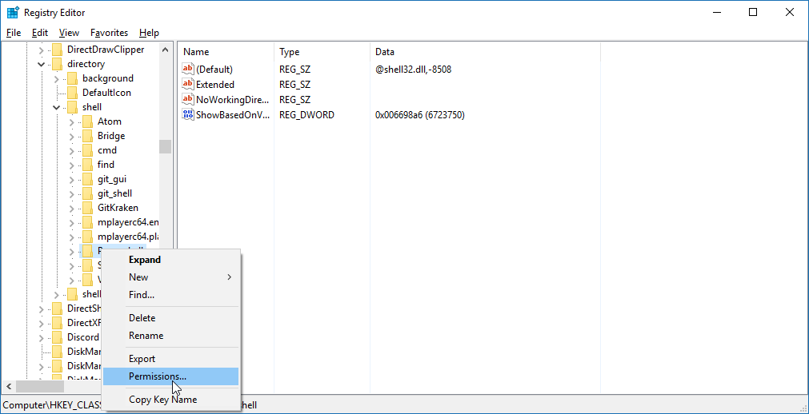

PowerShell to CMD
For you who are running the Windows 10 Creators Update, there is a certain negative thing that comes with this update that you may already have noticed. When you try to open a command prompt in a folder from the context menu, PowerShell has replaced the base CMD in Windows. Not even changing the setting is guaranteed to help. And our guide instructs using base CMD.
No worries though! We don't like this either and are hence instructing you how to revert this change. Or, well, work around it.
First steps
Before you begin
What you're going to start altering is potentially destructive if misused. The registry editor has a lot of power and can screw up your computer if you do this wrong. If technology isn't your strong suit, be sure to follow very carefully. In case somebody else is using your computer or governing over it, perhaps ask them for permission to tweak the registry before you proceed.
We in TheSharks are not responsible for issues caused by your actions in the registry!
Open the registry editor by pressing Win + R, typing regedit and hitting Enter.
As a good safety measure, before you start, export your registry settings somewhere so you can revert to a working config if and when things go haywire. Open the File menu, select Export and put them in a safe place.
You should be good to start hacking around in the registry now.
Creating permission overrides
Move to HKEY_CLASSES_ROOT\Directory\shell\Powershell. Then right-click the Powershell key in the bar to the left and select Permissions. In the window that opens, click Advanced which will open the permissions editor.


In the permissions editor, click Change at the top of the window. Then enter your current username in the text box, click Check Names and if it passes click OK. Tick "Replace owner on subcontainers and objects" after which hit OK to close the window.
Check the GIF below if you want a visual representation.

Now, in the permissions window, select Adminstrators and give them Full control permissions to the registry key.

Create a new string value in the key called ProgrammaticAccessOnly. The casing is important here!

Repeat the process above for keys HKEY_CLASSES_ROOT\Directory\Background\shell\Powershell and HKEY_CLASSES_ROOT\Drive\Background\shell\Powershell.
Note
HKEY_CLASSES_ROOT\Directory\Background\shell\Powershell might not exist on all systems. If it doesn't exist, omit the permission override process for it.
Now, if you Shift+Right click in a folder, you should be able to see "Open command window here" instead of PowerShell. If so, good! You're now done with this guide.
If not, there are some extra fixes required. We'll walk you through that below.
Optional additional fixes
Download this ZIP file with a registry file in it: http://lwtechgaming.me/files/ReinstateCMD.zip
If you just got skeptical, good! You're smart. Why should you trust this file? Well, it's not intended for anything malicious. The only thing that ZIP contains is a .reg file with necessary tweaks. The registry file itself does not do anything malicious.
For transparency, here is the registry file's contents. You can open it with a text editor and check if it matches if you're really scrutinous.
Windows Registry Editor Version 5.00 ; Created by: Linus Willner ; Created on: May 2nd 2017 ; Guide: http://docs.thesharks.xyz/powershell [HKEY_CLASSES_ROOT\Directory\shell\cmd2] @="@shell32.dll,-8506" "Extended"="" "Icon"="imageres.dll,-5323" "NoWorkingDirectory"="" [HKEY_CLASSES_ROOT\Directory\shell\cmd2\command] @="cmd.exe /s /k pushd \"%V\"" [HKEY_CLASSES_ROOT\Directory\Background\shell\cmd2] @="@shell32.dll,-8506" "Extended"="" "Icon"="imageres.dll,-5323" "NoWorkingDirectory"="" [HKEY_CLASSES_ROOT\Directory\Background\shell\cmd2\command] @="cmd.exe /s /k pushd \"%V\"" [HKEY_CLASSES_ROOT\Drive\shell\cmd2] @="@shell32.dll,-8506" "Extended"="" "Icon"="imageres.dll,-5323" "NoWorkingDirectory"="" [HKEY_CLASSES_ROOT\Drive\shell\cmd2\command] @="cmd.exe /s /k pushd \"%V\"" [HKEY_CLASSES_ROOT\LibraryFolder\Background\shell\cmd2] @="@shell32.dll,-8506" "Extended"="" "Icon"="imageres.dll,-5323" "NoWorkingDirectory"="" [HKEY_CLASSES_ROOT\LibraryFolder\Background\shell\cmd2\command] @="cmd.exe /s /k pushd \"%V\""
If you wish, backup your registry again now before making changes. When you've downloaded the ZIP file, double click the registry entry file inside it and allow it to alter the registry via the security prompts.
And that's it! You should now be able to use CMD from the context menu again without PowerShell being in your face.
If you still get issues, perhaps try Googling or coming over to our Discord server. We'll help you if you have questions.
Warning
We are not responsible for nor will we help you fix your broken registry if you break it - we will only tell you to restore the entries from a backup.
The link to our Discord server can be found from the homepage in the docs if you need it. Good luck in your future endeavours!